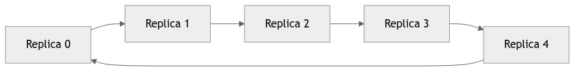
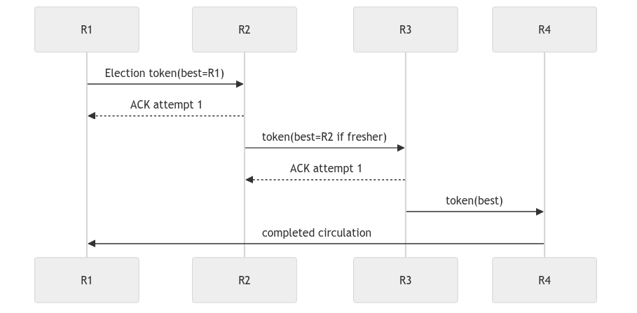
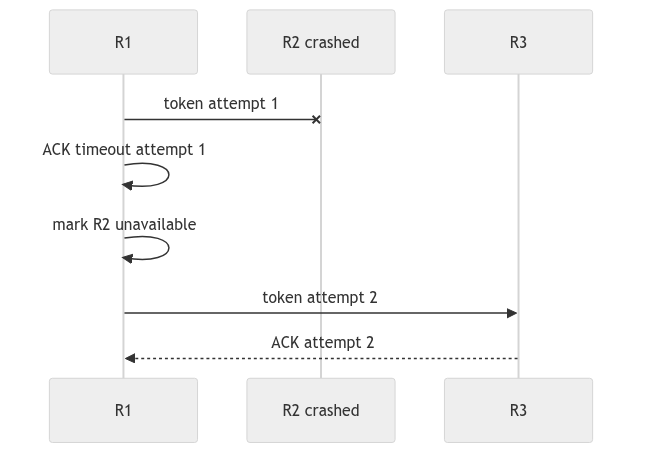
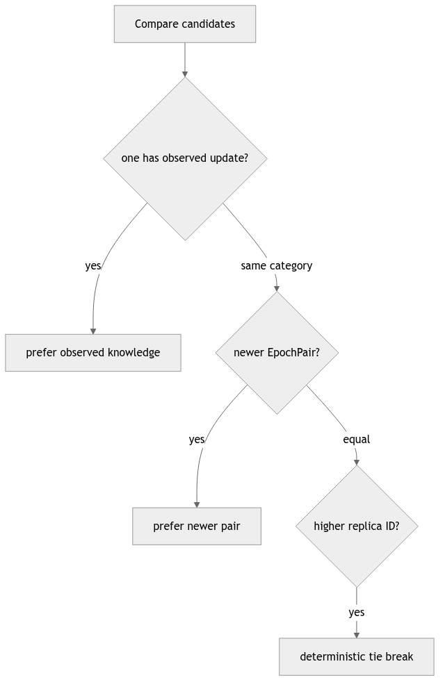
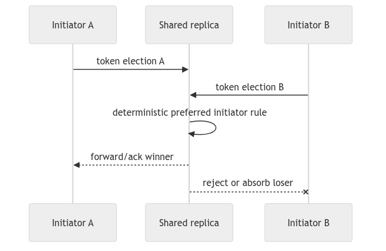
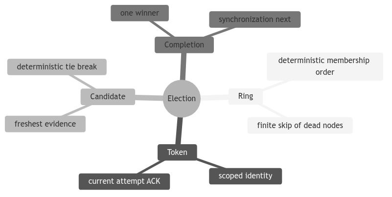

Learning goal. Follow the election token around an ID-ordered ring, understand candidate selection and ACK timeouts, and see how the code suppresses competing elections.
Implementation inspected: feature/electionTransaction at d1222a2.
Key files: ElectionTransaction.java, election sections of Replica.java, TestElectionTransaction.java, election diagrams.
After coordinator failure, replicas must choose one new coordinator. This is not simply “highest replica ID wins.” The winner should be the surviving replica with the freshest observed update so it has the best recovery knowledge. Replica ID breaks equal-freshness ties.
The logical ring sorts numeric replica IDs. Physical actor creation order or map iteration order does not define the ring.
ElectionCandidate contains:
EpochPair when present.Comparison rules, from strongest to weakest, are:
Examples:
R2 at <3,9> beats R4 at <3,8>
R4 at <3,9> beats R2 at <3,9>
R1 with <0,0> beats R5 with no observed update
The candidate list is copied into ElectionMsg, preventing mutation while the token is in flight.
ElectionStartMsg: local delayed trigger after failure detection.ElectionMsg: network token carrying failed coordinator ID and candidates.ElectionAckMsg: confirms the next replica received/forwarded the token.ElectionAckTimeoutMsg: local attempt timeout with expected target and version.ElectionRejectMsg: tells a losing competing initiator to cancel.SynchronizationMsg: leadership/recovery announcement, covered mainly in the recovery report.NEW -> PARTICIPATING -> ELECTED -> SYNCHRONIZING -> DONE
\------------------------------> DONE on rejection/failure
PARTICIPATING covers both an initiator and a replica that joined an incoming token. ELECTED means this local candidate won. SYNCHRONIZING acknowledges that leadership is not operational until recovery work is initiated.
Every follower can notice the same failed coordinator. Starting all tokens simultaneously would create unnecessary competition.
Replica.startElection calculates ring distance from the failed coordinator and schedules start after:
ringDistance * maxLatencyPlusTolerance
The closest successor starts first. Sets prevent repeated scheduling, repeated participation, or restarting an already completed failure term.
Staggering reduces competition; it does not eliminate it. The code still defines deterministic competition resolution.
Suppose R1 failed and ring survivors are R2, R3, R4.
Forward-before-ACK ensures that receiving an ACK means the next participant accepted responsibility for continuing the token.
When a sender forwards, it stores:
If the expected ACK does not arrive:
Removing a crashed candidate matters. Otherwise a dead but freshest candidate could be elected forever.
An ACK is accepted only if there is a pending message and its sender maps to the current pending target. Valid ACK cancels the timer and clears pending state.
The attempt version protects against this race:
attempt 4 to R3 times out
attempt 5 starts toward R4
old timeout or late event from attempt 4 arrives
Only attempt 5 may affect current forwarding.
Replica tracks the current election transaction ID per failed coordinator. If another token arrives, it compares initiators:
Election IDs use negative sequence numbers, separated from ordinary non-negative replica transactions and heartbeat sequence zero.
The preferred incoming election replaces the current transaction. A non-preferred token is rejected. An initiator receiving ElectionRejectMsg completes and unregisters its losing FSM.
Before creating/routing a token, Replica.isValidElectionMessage rejects:
Validating before routing prevents malformed messages from poisoning transaction maps or causing null dereferences.
The ring contains a finite static set. Each failed forwarding target is added to unavailableReplicaIds, so a local attempt does not retry the same dead target forever. A strict majority survives, so at least one candidate should remain.
The branch also removes a selected winner if it cannot be contacted and recomputes from remaining candidates. This addresses the case where the best candidate crashes after token collection.
End-to-end termination still depends on timeout accuracy, valid membership, and integration with heartbeat/crash behavior.
epochPair; integrated immutable update history is absent.TestElectionTransaction checks:
Needed additional tests include full token circulation, neighbor crash skip, best-candidate crash, two initiators converging, and exactly-once callbacks on all survivors.
Why use freshness before replica ID? The new coordinator must possess the best recovery knowledge. ID is only a deterministic tie-breaker.
Why ACK after forwarding? It transfers responsibility for progress; the previous sender may stop retrying only after the receiver has continued the token.
The invariant to remember is: for each failed coordinator, correct replicas converge on one surviving election token and one best available candidate, while each failed next hop is eventually skipped.
R0 -> R1 -> R2 -> R3 -> R4 -> R0 | | +-- election token: candidate=R0, observed=(2,4) R1 compares its state, keeps newer candidate if any, forwards R2 does the same ... R4 forwards to R0 R0 sees its own token again -> install winner -> synchronize
The ring gives each survivor a chance to contribute recovery knowledge. It is not a broadcast tree: a crashed next hop must be skipped, and an ACK means the next participant accepted responsibility for forwarding. The election result is still incomplete until the synchronization phase installs a consistent snapshot/history.
Candidate comparison should be deterministic and explainable: prefer a
non-empty observed epoch, then a newer EpochPair, then a higher replica ID as
a tie-breaker. A token also needs an attempt/generation so an old ACK cannot
advance a newer circulation after a timeout.
if (incoming.observed().isNewerThan(best.observed()))
best = incoming;
else if (sameEpoch(incoming, best)
&& incoming.replicaId() > best.replicaId())
best = incoming; // deterministic tie-break
if (ack.attempt() != currentAttempt) return; // stale ACK
forwardToNextLive(token.with(best));
When a candidate or next hop is dead, the sender needs a bounded traversal strategy. Blindly retrying a dead actor can keep the mailbox busy forever; skipping it without recording the skip can make the proof of ring coverage unclear. Tests should observe both the skip and eventual completion.
Two followers may detect silence close together and start tokens. The protocol must make both circulations converge on one winner rather than install two coordinators. Typical tools are a deterministic candidate order, token identity, and forwarding rules that absorb an inferior token. Draw two tokens crossing the same edge and mark which one survives; if the design cannot explain that picture, it is not yet a convergence argument.
Create a table for replicas with observed epochs (3,8), (3,10), and (4,0)
and IDs 1–3. Which candidate wins, and why? Then repeat with the best candidate
crashed before synchronization and explain what the recovery layer must do.

The ring is a deterministic ordering of static membership, commonly by replica ID. Every survivor must calculate the same successor relation. Actor creation order or map iteration order is not a safe substitute unless explicitly normalized.
Ring navigation should terminate after considering finite membership. When a next hop is unavailable, advance to the next candidate; when every other member is unavailable, the majority assumption determines whether progress is still permitted.

ACK transfers forwarding responsibility. The previous sender stops retrying only after a valid ACK for the current target and attempt. The token accumulates or carries the best candidate according to one deterministic comparison.
Transaction ID and failed-coordinator scope distinguish this circulation from an old or competing election. A token returning to its initiator means collection completed; it does not yet mean recovery completed.

The timeout payload must identify target and attempt. A late ACK from R2 for attempt 1 cannot cancel responsibility already transferred to R3 in attempt 2. The unavailable set prevents endless retries of the same dead neighbor.
Tests should inject the late ACK as well as the missing one. That establishes generation validation, not merely timeout progress.

Replica ID alone elects deterministically but may choose a node missing the latest recovery evidence. Freshness comes first because coordinator selection is coupled to interrupted-update recovery. ID only breaks genuine ties.
Define comparison for null or absent history explicitly. Malformed candidates must be rejected before routing so they cannot win by an accidental null-order rule.

Staggered starts reduce collisions but are not a correctness proof. When two tokens coexist, all replicas must apply the same preference scoped to the same failed coordinator. Completed-election memory then rejects a late loser after the new term begins.
Separate token preference from final candidate preference: the chosen token is the mechanism that collects candidates; the freshest candidate may be another replica entirely.

Prove termination under the stated surviving-majority assumption, then explain where the proof relies on bounded timeout and static membership. Construct a trace with two initiators, one dead neighbor, a late ACK, and the freshest candidate crashing. Mark which behavior is implemented and which recovery step still needs evidence.
Leader election is often introduced as “pick the process with the highest ID.” That is not sufficient here. The next coordinator will order and recover replicated updates, so it should be the surviving candidate with the freshest known update evidence; replica ID breaks ties only when freshness is equal. Election is therefore a data-safety decision as well as a leadership decision.
The ring supplies a deterministic route for gathering candidates. Sort static replica IDs, send to the next available ID, receive an ACK, and continue until the token has completed its traversal. The ring is logical: messages still use Akka actor references and channel actors rather than a physical ring network.
Every participant must compare candidates with the same rule. First compare
the latest known EpochPair; then compare replica ID as a deterministic tie
breaker. Handle “no known update” explicitly so that null does not create
different local interpretations. A comparator that is reflexive,
antisymmetric, and transitive gives all replicas the same best candidate for
the same candidate set.
Freshness is meaningful only if candidate records accurately represent observed/committed history. Election cannot repair missing update metadata. It selects from the evidence supplied by replicas, which is why the state-history and election reports depend on each other.
After forwarding the token, a replica waits for an ACK from the selected next ring neighbor. If that exact attempt times out, it marks the neighbor unavailable and tries the next ID. The ACK is not a vote for the final winner; it confirms handoff/progress for one hop. Confusing these meanings can make a quorum-based election implementation appear where the code actually uses ring circulation.
Target ID and attempt version belong in the timeout message. A late ACK from a previous neighbor or a queued timeout for an earlier attempt must not alter the current handoff. This is the same generation principle used by heartbeat, now scoped to a ring edge rather than a watchdog.
With finite static membership, bounded detection time, and at least one reachable surviving path, repeated skipping cannot continue forever: each failed attempt adds a previously untried unavailable ID, and the ring contains a finite number of IDs. Eventually the token reaches a correct next participant or returns to the completion condition.
That proof needs care when the candidate selected as winner crashes or when several tokens circulate. The surviving-majority assumption ensures many correct replicas exist but does not by itself define which token wins or how a half-completed announcement is superseded. The implementation needs explicit rules for competing election identities and completed-election memory.
Heartbeat expiry can occur at several followers near the same time. Staggered startup reduces collisions but cannot prove there is only one initiator. When two tokens concern the same failed coordinator, every replica must apply the same deterministic preference, forward or absorb consistently, and reject a late losing token after completion.
Separate two comparisons. Token preference decides which collection process continues. Candidate preference decides which replica in the collected set is best qualified to lead. The winning token’s initiator need not be the elected coordinator. Logs and variable names should make that distinction visible.
Selecting a winner does not immediately make arbitrary new writes safe. The
winner must announce a newer epoch, synchronize necessary state/history, wait
for the defined barrier, reconfigure heartbeat roles, and only then resume
updates. A test that observes callbackOnCoordinatorElected proves an election
event; it does not prove safe post-failure service.
To study the FSM, maintain a trace table containing local election state, token ID, failed coordinator, candidate set, unavailable IDs, pending target, attempt version, and timeout. Add one row per mailbox event. This table makes late ACK handling and competing-token decisions much easier to verify than a sequence diagram alone.